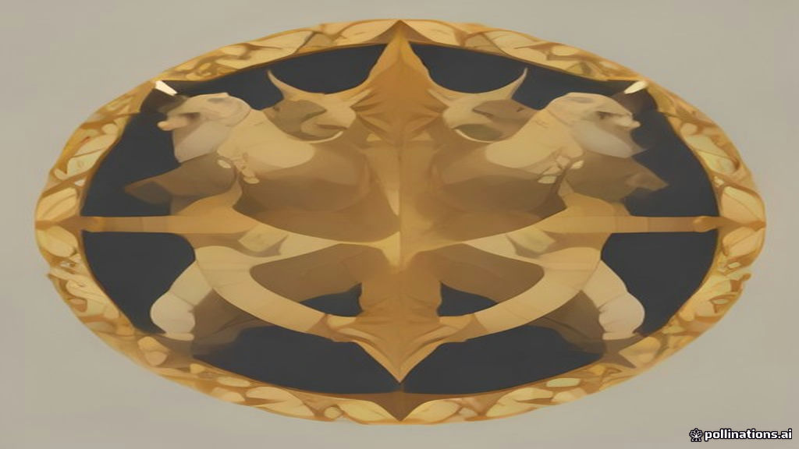

Market Wrap — 09 November 2026
TL;DR
- Indian markets closed higher today, with Nifty 50 and Bank Nifty leading the gains.
- Strong FII inflows and easing global crude oil prices were key positive drivers.
- Bank Nifty was the standout performer, surging over 1.5%.
- Data Patterns (India) Ltd. was the top Nifty 500 gainer, while R R Kabel Ltd. was the biggest loser.
- Foreign Institutional Investors (FIIs) continued their strong buying spree, while Domestic Institutional Investors (DIIs) were net sellers.
- F&O positioning data is unavailable for today's wrap.
How the market behaved today
Indian equities witnessed a positive session, with the benchmark Nifty 50 closing above the 25,000 mark and the Bank Nifty surging significantly. The market opened with a positive bias and maintained its upward momentum through the day, with Bank Nifty hitting its day's high at close.
| Index | Close | Change | High | Low |
|---|---|---|---|---|
| Nifty 50 | 25044.65 | +0.23% | 25084.05 | 24838.75 |
| Bank Nifty | 59741.25 | +1.51% | 59741.25 | 58877.85 |
| Nifty Midcap 100 | 61022.55 | +0.55% | 61026.25 | 60334.10 |
| Nifty Smallcap 100 | 19185.05 | +0.10% | 19186.70 | 18954.75 |
India VIX cooled off by 5.48% to 17.42, indicating a reduction in market volatility.
What moved the market — the factors
The Indian market's positive trajectory today was primarily driven by robust inflows from Foreign Institutional Investors (FIIs) and a significant easing in global crude oil prices. FIIs were net buyers of ₹13,750 crore, extending their consistent buying trend over the past five sessions. Global cues also played a supportive role, with the US dollar dipping and US markets showing signs of a rebound, particularly in chip stocks, despite ongoing concerns around AI-related names and Nvidia. Hopes of a US-Iran peace deal further improved sentiment, leading to a rally in Indian government bonds and a drop in benchmark yields. Domestically, the PSU Bank and Pharma sectors led the charge, while IT and Metal sectors faced selling pressure.
Sectors — winners and losers
Top 3 gainer sectors:
- PSU BANK: +3.73% - Led by strong buying interest, possibly on the back of overall positive banking sentiment and FII inflows.
- PHARMA: +1.65% - Showed healthy gains, indicating renewed investor confidence in the healthcare space.
- BANK: +1.51% - Bank Nifty's strong performance was reflected across the broader banking sector.
Top 3 loser sectors:
- IT: -1.22% - Faced selling pressure, potentially due to global tech stock concerns and profit-booking.
- METAL: -0.46% - Witnessed a slight decline, possibly impacted by global commodity price movements or sector-specific news.
- FMCG: -0.15% - Closed marginally lower, indicating some cautiousness in consumer-oriented stocks.
Stocks that moved the market
Top 5 gainers (Nifty 500)
- Data Patterns (India) Ltd. (DATAPATTNS, Capital Goods): close ₹4025.00, +8.67%
- Indian Renewable Energy Development Agency Ltd. (IREDA, Financial Services): close ₹119.65, +7.47%
- Glaxosmithkline Pharmaceuticals Ltd. (GLAXO, Healthcare): close ₹2710.00, +6.71%
- Union Bank of India (UNIONBANK, Financial Services): close ₹197.00, +5.60% - This PSU Bank stock rallied significantly, aligning with the strong performance of the broader PSU Bank sector today.
- Sansera Engineering Ltd. (SANSERA, Automobile and Auto Components): close ₹4653.40, +5.42%
Top 5 losers (Nifty 500)
- R R Kabel Ltd. (RRKABEL, Capital Goods): close ₹1969.40, -6.90%
- TD Power Systems Ltd. (TDPOWERSYS, Capital Goods): close ₹571.65, -6.26%
- Finolex Cables Ltd. (FINCABLES, Capital Goods): close ₹1232.40, -5.85%
- Tata Teleservices (Maharashtra) Ltd. (TTML, Telecommunication): close ₹39.33, -5.25%
- Jubilant Foodworks Ltd. (JUBLFOOD, Consumer Services): close ₹428.50, -4.99%
News that moved stocks
Global Market Dynamics & Geopolitics
- Trump administration's embrace of "perp" futures sets off risk alarms for Wall Street stalwarts. The decision to launch perpetual futures by the Trump administration has raised significant concerns among established market players, who fear these offerings could disrupt the market. This news highlights potential regulatory shifts impacting global financial markets.
- US dollar dips as easing AI and Mideast worries limit its appeal. The US dollar saw a downward trend after hitting a six-month high, driven by strong job growth figures and reduced concerns over AI and the Middle East. A weaker dollar typically bodes well for emerging markets like India.
- Oil down more than $7 a barrel in post settlement trade as Trump signals restraint on Iran. Global oil prices dropped significantly as signals from the Trump administration indicated restraint on Iran, easing geopolitical tensions and supply concerns. This news directly contributed to the fall in crude oil prices, which is a positive for India's import bill and inflation outlook.
- US stocks: Dow Jones rallies 500 points, Nasdaq over 2% as chip stocks rebound; Nvidia probe weighs. Wall Street indexes climbed as investors focused on Nvidia CEO Jensen Huang's investigation and awaited inflation data, with chip stocks rebounding despite Nvidia's shares declining due to foreign intelligence worries. This positive sentiment from US markets provided a tailwind for Indian equities.
- Nvidia sell-off continues: Chipmaker stock plunges 9% as Jensen Huang faces espionage controversy. Nvidia's stock continued its decline after the company initiated an investigation into CEO Jensen Huang's alleged links with an executive tied to intelligence efforts. This news highlights specific stock-level risks within the global tech sector.
Indian Market & Economy
- India bonds continue rally ahead of inflation data. Indian government bond yields extended their rally, with the benchmark 10-year yield falling nearly 4 basis points, buoyed by easing crude oil prices and hopes of a US-Iran peace deal. This indicates improved investor sentiment and expectations of contained inflation.
- Indian rupee breaks six-day winning streak on state banks' dollar bids. The Indian rupee ended its six-session winning streak as dollar purchases by state-run banks outweighed positive momentum, despite touching a six-month high earlier. This suggests intervention by state banks to manage currency volatility.
- RBI's $239 bn forward dollar position to limit rupee gains despite FPI inflows: Report. The Reserve Bank of India's substantial net short position in the forward market could restrict the rupee's appreciation, even with strong foreign portfolio investor inflows. This indicates the RBI's active role in managing currency stability.
- FIIs cut stake in 10 smallcap stocks for 3 consecutive quarters; shares fall up to 70% in CY26. Foreign Institutional Investors reduced their holdings in numerous BSE smallcap companies for three consecutive quarters, leading to significant declines in some stocks. This highlights a cautious approach by FIIs towards certain smallcap segments.
Corporate & IPO News
- Uno Minda among 7 stocks hitting 52-week highs; rally up to 26% in a month. Several stocks, including Uno Minda, reached 52-week highs, demonstrating strong individual stock performance.
- Upcoming IPO: Veritas Finance gets Sebi nod to launch public issue – Top things for investors. Veritas Finance received SEBI approval for its public issue, with plans to use the proceeds to strengthen its capital base and support future lending operations. This news indicates activity in the primary market.
F&O build-up — where traders are positioning
OI build-up needs the previous session's OI — it will populate from the next run. Data for F&O build-up is unavailable for today's wrap.
Market breadth
The market breadth was slightly negative today, with 230 advances against 262 declines out of a total of 492 stocks traded. This suggests that while the indices closed higher, the broader market saw more stocks declining than advancing.
FII / DII flows
Foreign Institutional Investors (FIIs) continued their strong buying momentum today, injecting a substantial ₹13,750 crore into the Indian markets. Domestic Institutional Investors (DIIs), however, were net sellers, offloading ₹5,969 crore.
| Investor Type | Net Flow (₹ crore) |
|---|---|
| FII | +13,750 |
| DII | -5,969 |
Looking at the 5-day history, FIIs have been consistent net buyers, with today's inflow matching the previous session's figure. This sustained FII buying, totalling over ₹45,000 crore in the last five sessions, indicates strong foreign investor confidence in the Indian market, while DIIs have been consistently booking profits.
Event breakdown — what happened today and how it hit the market
Today's session was primarily driven by a confluence of positive global cues and robust FII inflows. The market reacted positively to easing geopolitical tensions in the Middle East, particularly hopes of a US-Iran peace deal, which led to a significant drop in crude oil prices. This fall in crude is a major positive for India, easing inflationary pressures and improving the current account outlook. US markets also showed a strong rebound, contributing to the overall positive sentiment.
Domestically, the strong FII buying provided significant liquidity and confidence, especially boosting the banking sector, with PSU Banks and the broader Bank Nifty being the top performers. Indian government bonds also rallied, reflecting improved sentiment ahead of inflation data. The dip in the US dollar further supported the positive mood. While some profit-booking was seen in sectors like IT and Metal, the overall market tone remained bullish, largely due to external factors and sustained foreign investor interest.
Setup for tomorrow
Looking ahead, global cues will continue to be crucial. The dip in the US Dollar Index to 101.67 and Brent Crude falling to $92.82 are positive indicators for the Indian market. US 10-year yield is slightly up at 4.86. Investors will be watching for global inflation data, especially the upcoming US consumer price index. The sustained FII buying trend, coupled with easing crude prices, suggests a supportive environment. However, the slightly negative market breadth today indicates that broader participation might be selective. Sectors like banking and pharma could remain in focus, while the performance of global tech stocks might influence the Indian IT sector.
Sources
- https://economictimes.indiatimes.com/markets/us-stocks/news/trump-administrations-embrace-of-perp-futures-sets-off-risk-alarms-for-wall-street-stalwarts/articleshow/135688561.cms
- https://economictimes.indiatimes.com/markets/forex/forex-news/us-dollar-dips-as-easing-ai-and-mideast-worries-limit-its-appeal/articleshow/135687593.cms
- https://economictimes.indiatimes.com/markets/us-stocks/wall-street-guide/us-stocks-us-market-opens-higher-after-last-weeks-ai-rout/articleshow/135685663.cms
- https://economictimes.indiatimes.com/markets/us-stocks/wall-street-guide/nvidia-stock-crashes-8-after-a-foreign-intelligence-probe-initiated-by-ai-company-into-ceo-jensen-huang/articleshow/135685302.cms
- https://economictimes.indiatimes.com/markets/us-stocks/wall-street-guide/dow-jones-us-stock-market-live-updates-nasdaq-sp-500-iran-war-hormuz-deal-brent-crude-oil-inflation-fed-rate-nvidia-jensen-huang-marvell-tech-qualcomm-meta-micrsoft-ai-chip-stock-price-news-9th-november-2026/liveblog/135683531.cms
- https://economictimes.indiatimes.com/markets/bonds/india-bonds-continue-rally-ahead-of-inflation-data/articleshow/135681750.cms
- https://economictimes.indiatimes.com/markets/stocks/news/uno-minda-among-7-stocks-hitting-52-week-highs-rally-up-to-26-in-a-month/slideshow/135681703.cms
- https://economictimes.indiatimes.com/markets/us-stocks/wall-street-guide/us-markets-still-reliant-on-tech-stocks-despite-ai-selloff-and-democrat-win-triggered-political-risks/articleshow/135679992.cms
- https://economictimes.indiatimes.com/markets/stocks/news/fiis-cut-stake-in-10-smallcap-stocks-for-3-consecutive-quarters-shares-fall-up-to-70-in-cy26/slideshow/135680171.cms
- https://economictimes.indiatimes.com/markets/forex/indian-rupee-breaks-six-day-winning-streak-on-state-banks-dollar-bids/articleshow/135678769.cms
- https://economictimes.indiatimes.com/markets/forex/rbis-usd-239-bn-forward-dollar-position-to-limit-rupee-gains-despite-fpi-inflows-report/articleshow/135678171.cms
- https://www.livemint.com/market/viking-loses-1-2-in-october-after-eschewing-many-big-ai-bets-11794256428481.html
- https://www.livemint.com/market/oil-down-more-than-7-a-barrel-in-post-settlement-trade-as-trump-signals-restraint-on-iran-11794254623929.html
- https://www.livemint.com/market/upcoming-ipo-veritas-finance-gets-sebi-nod-to-launch-public-issue-top-things-for-investors-11794247367964.html
- NSE India: https://www.nseindia.com/
- RBI: https://www.rbi.org.in/
- SEBI: https://www.sebi.gov.in/